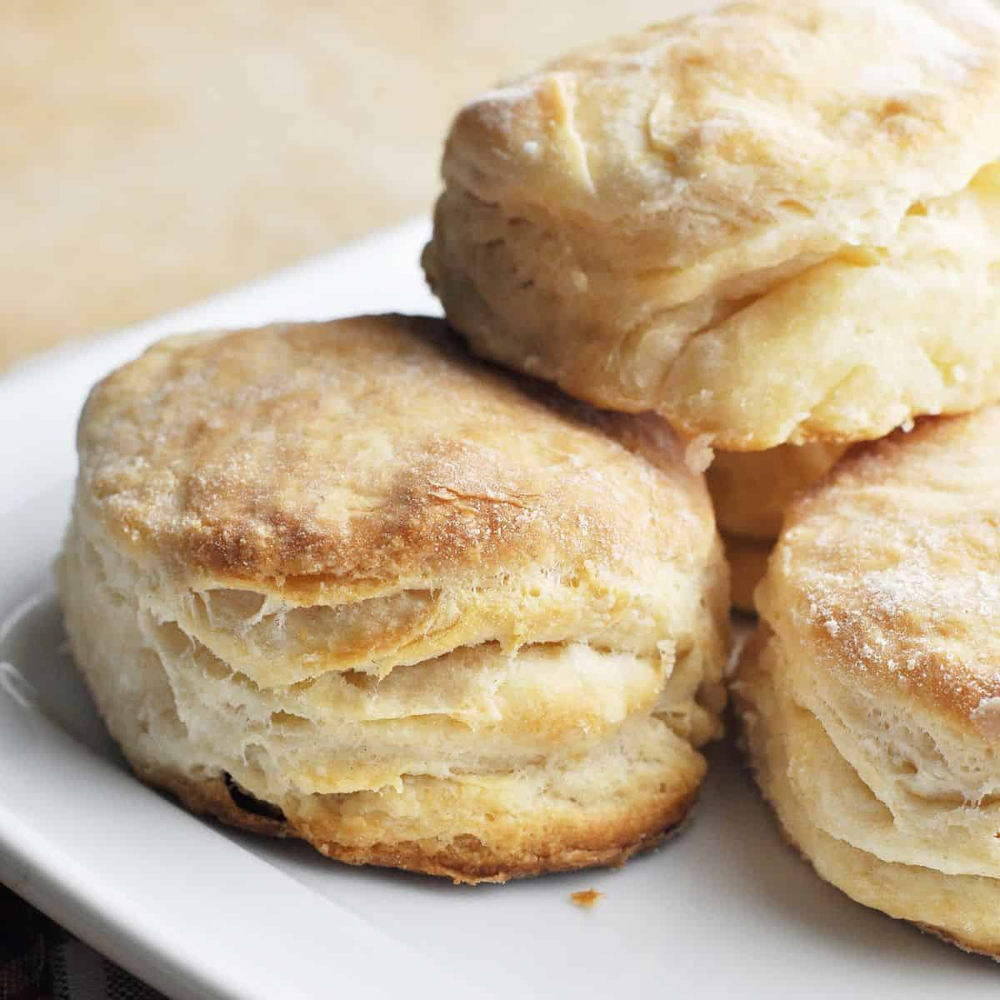

Southern Biscuits

Description
Southern biscuits are a beloved staple of comfort food culture, prized for their tender crumb and perfectly golden exterior. Made with just a handful of simple ingredients—flour, a fat like butter or lard, and a liquid (often buttermilk)—these biscuits rely on cold, solid fats and a gentle mixing technique to achieve their signature light and flaky texture.
Ingredients
- ½ teaspoon lard
- 2 cups all-purpose flour
- ¾ teaspoon salt
- ¼ teaspoon baking soda
- 2 teaspoons baking powder
- 2 tablespoons butter, frozen
- 2 tablespoons lard, frozen
- 1 teaspoon bacon drippings
- 1 cup buttermilk
Steps
- Preheat oven to 450 degrees F (230 degrees C). Lightly grease a baking sheet with 1/2 teaspoon of lard.
- Mix together the flour, salt, baking soda, and baking powder in a bowl. Grate the frozen butter and 2 tablespoons frozen lard into the flour mixture with a cheese grater; stir lightly 1 or 2 times to mix. With your fingers, make a well in the middle of the flour mixture, and pour the bacon drippings and buttermilk into the well. With just the tips of your fingers, stir lightly and quickly to just bring the dough together before the butter and lard melt. Dough will be sticky.
- Scrape dough out onto a floured surface, and gently pat the dough flat. Sprinkle the top of the dough with flour, and fold it in half; pat down, fold again, and repeat until you have folded the dough 4 or 5 times. With a rolling pin, roll the dough out to a square about 1 inch thick. Cut the biscuit dough into rounds with a 2 1/2-inch biscuit cutter or the floured edge of a drinking glass by pushing straight down (twisting the cutter will seal the edge and keep the biscuits from rising). Lay the biscuits onto the prepared baking sheet so the edges just touch.
- Bake in the preheated oven until risen and lightly golden brown, 15 to 20 minutes.
- Serve